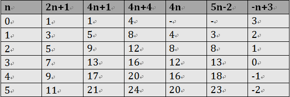

“:nth-child(n)”选择器用来定位某个父元素的一个或多个特定的子元素。
其中“n”是其参数，而且可以是整数值(1,2,3,4)，也可以是表达式(2n+1、-n+5)和关键词(odd、even)，但参数n的起始值始终是1，而不是0。
也就是说，参数n的值为0时，选择器将选择不到任何匹配的元素。
:nth-child(n)”选择器中的n为一个表达式时，其中n是从0开始计算，当表达式的值为0或小于0的时候，不选择任何匹配的元素。如下表所示：

“:nth-last-child(n)”选择器和前面的“:nth-child(n)”选择器非常的相似，只是这里多了一个“last”.
的作用和“:nth-child(n)”选择器有所区别，从某父元素的最后一个子元素开始计算,位置为1，来选择特定的元素。